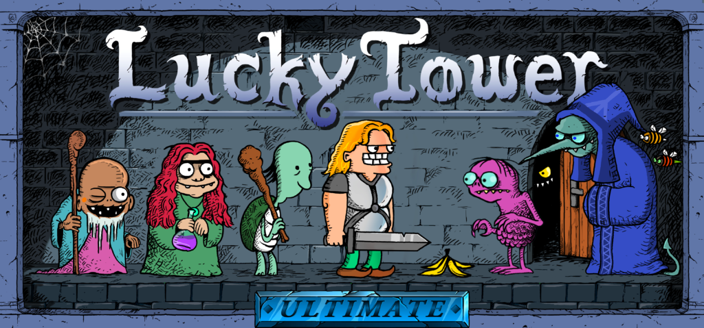

Game Dev. Internship
2024 - 2025

Studio Seufz is a game studio based in Stuttgart, Germany, where a small team works on various projects, most notably video games. One of their most successful games is The Longing, a well-received game known for its exceptionally long playtime of 400 real-life days.
I worked full-time as a game programmer at the studio for six months as part of a required university internship. During that time, I worked with the small team on their latest game, Lucky Tower Ultimate, the third entry in the Lucky Tower series, which originally started as a series of Flash games.
When I started my internship, Lucky Tower Ultimate was about to enter Early Access. The team was busy preparing for the release and handling the moderation of reviews and bug reports.
I took some time to familiarize myself with the game and understand its vision by playing it extensively. Having a clear understanding of the project is especially important when working as part of a team.
In Unity, I familiarized myself with the structure of the game and, most importantly, its scripts. I worked as a game programmer, assisting the two lead programmers with various tasks.
• brainstorming ideas for items and traps
• implementing new traps, items, and rooms
• adding new game mechanics
• implementing and continuing work on unfinished features
• playtesting to identify improvements and bugs
• fixing bugs
The opportunity Studio Seufz gave me came at a perfect time. I had just finished my previous project, "Innovil", with very little experience in larger-scale game development. After the internship, I could clearly recognize many of the structural flaws in that project and understand how I could have approached them differently. I became much more confident in structuring code and gained a better understanding of how to build systems that remain maintainable and robust as a project grows.
More importantly, I got a first-hand experience of working as part of a professional game studio, giving me valuable insight into how a studio is structured, how projects are planned, and how development is organized and carried out. It was also interesting to see how the studio interacted with its community and handled communication with its players. Overall, it was an extremely valuable experience that significantly shaped how I approach game development today.
Lucky Tower Ultimate is a roguelike 2D platformer about Von Wanst, who is trying to find his way out of a tower ruled by the evil Evelius. I highly recommend checking out the game if you are interested in the project. I would love to see the game and the studio receive the support they deserve.